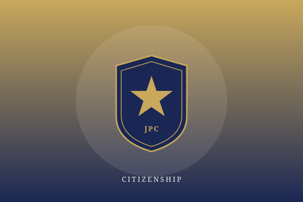
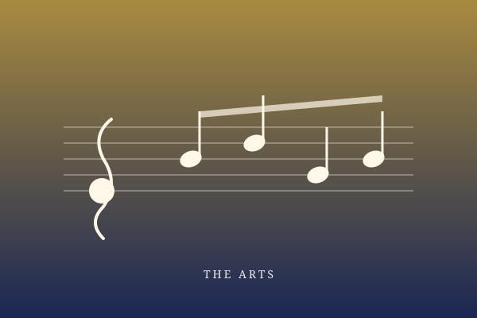
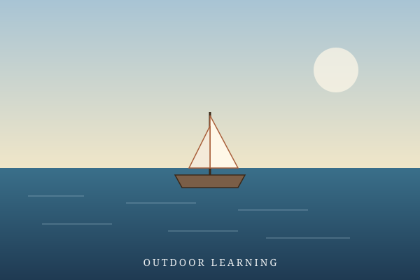

Inter-School Sevens — Girls' Rugby Champions
Our senior girls' side lifted the Inter-School Sevens trophy after an unbeaten run, capping a season of remarkable team chemistry.
Read moreWhat our students, teachers, and alumni have been up to.
Our senior girls' side lifted the Inter-School Sevens trophy after an unbeaten run, capping a season of remarkable team chemistry.
Read moreApplications are now open for limited mid-year places in Secondary 2 to Secondary 4. Online registration available.
Read more
Our Junior Police Call team took the top territory-wide title for civic awareness and crisis simulation.
Read moreCognitio students brought home the Young Talent Creativity Award from the 2026 Geneva International Exhibition of Inventions.
Read moreTwo of our teachers received the Outstanding Teaching Award for Values Education at this year's territory-wide ceremony.
Read moreLocal press covers our integration of Chinese cultural heritage with STEM-driven innovation in the community.
Read more
The school orchestra and choir performed to a full house at the annual Spring Concert, with all proceeds supporting our local outreach partners.
Read more
S4 students completed a five-day marine biology field camp at Hoi Ha Wan Marine Park, contributing data to a citizen-science programme.
Read more